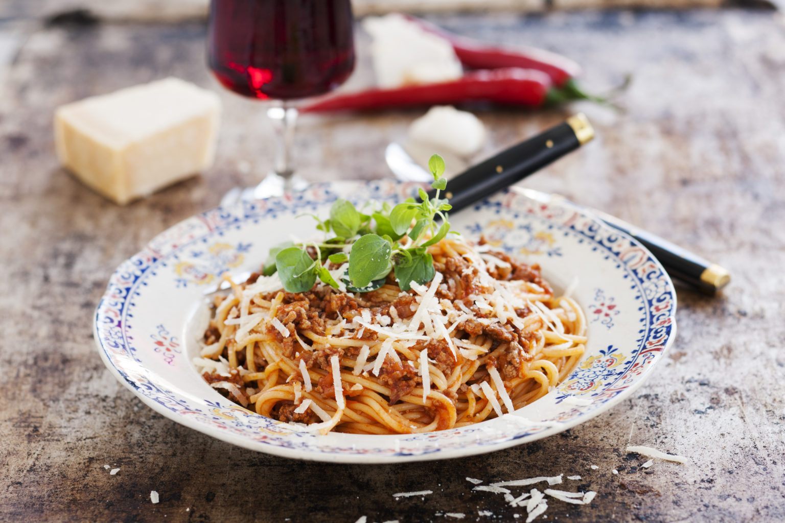

Spaghetti bolognese
4 portioner

14 Ingredienser - 20 minuter
- 400g Spaghetti
- 500g Nötfärs
- 1/2 dl Olja
- 1 Hackad gul lök
- 1 Hackad vitlöksklyftor
- 1/3 finhackad chili (friviligt)
- 2 msk Tomatpuré
- 2 tsk Oregano
- 1 frp Finkrossade tomater
- 1 dl Vatten
- 1 msk Köttfond
- Salt
- Nymalen svartpeppar
- Ost (till servering)
Gör så här
- Bryn köttfärsen i olivoljan, salta och peppra.
- Lägg i lök, vitlök och chili. Fräs i ytterligare 2 minuter.
- Tillsätt tomatpuré, oregano, finkrossade tomater, vatten och fond.
- Låt koka ihop under ca 10-15 minuter, rör om då och då, smaka av med salt och svartpeppar.
- Koka spaghettin al dente i rikligt med saltat vatten, låt rinna av i ett durkslag. Blanda pastan med såsen.
- Servera med riven parmesan och lite olivolja att ringla över. Garnera med färsk oregano om du vill.